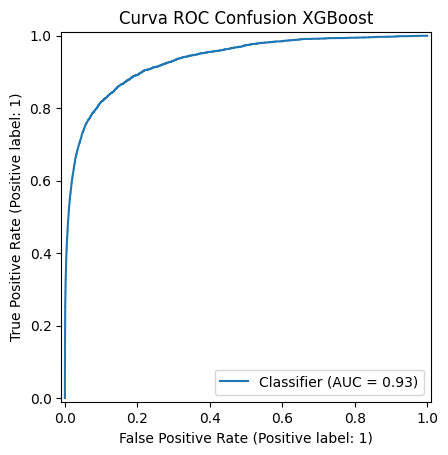
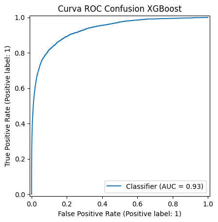

Ejercicio 2. Modelos de Clasificación#
# utilidades_generales
import numpy as np
import pandas as pd
import time, joblib, matplotlib.pyplot as plt
from sklearn.model_selection import train_test_split, StratifiedKFold
from sklearn.preprocessing import StandardScaler
from sklearn.pipeline import Pipeline
from sklearn.metrics import precision_score, recall_score, f1_score, roc_auc_score, confusion_matrix, ConfusionMatrixDisplay, RocCurveDisplay, classification_report
from skopt import BayesSearchCV
from skopt.space import Real, Integer, Categorical
from sklearn.neighbors import KNeighborsClassifier
from sklearn.linear_model import LogisticRegression
from sklearn.naive_bayes import GaussianNB
from sklearn.tree import DecisionTreeClassifier
from sklearn.ensemble import RandomForestClassifier
from sklearn.svm import SVC
from sklearn.neural_network import MLPClassifier
import xgboost as xgb
X = df_train_full.drop('isFraud', axis=1)
y = df_train_full['isFraud']
X_train, X_val, y_train, y_val = train_test_split(X, y, test_size=0.2, stratify=y, random_state=42)
cv = StratifiedKFold(n_splits=2, shuffle=True, random_state=42)
pos, neg = y_train.sum(), len(y_train) - y_train.sum()
escala = neg / pos
resultados = pd.DataFrame(columns=['modelo','precision','recall','f1','auc'])
# # knn_entrenamiento
# inicio = time.time()
# pipe_knn = Pipeline([('scaler', StandardScaler()), ('modelo', KNeighborsClassifier())])
# esp_knn = {'modelo__n_neighbors': Integer(3, 15), 'modelo__weights': Categorical(['uniform', 'distance'])}
# bay_knn = BayesSearchCV(pipe_knn, esp_knn, scoring='roc_auc', n_jobs=-1, cv=cv, n_iter=5, random_state=42)
# print('Entrenando KNN')
# bay_knn.fit(X_train, y_train)
# print('Mejor AUC validación:', bay_knn.best_score_)
# print('Tiempo:', time.time() - inicio)
# joblib.dump(bay_knn.best_estimator_, 'drive/MyDrive/knn.pkl')
Entrenando KNN
Mejor AUC validación: 0.8352891784145362
Tiempo: 2691.609223842621
[‘knn.pkl’]
# knn_metricas
modelo_knn = joblib.load('drive/MyDrive/knn.pkl')
pro_knn = modelo_knn.predict_proba(X_val)[:, 1]
pr_knn = (pro_knn >= 0.5).astype(int)
cm_knn = confusion_matrix(y_val, pr_knn)
ConfusionMatrixDisplay(cm_knn).plot()
plt.title("Matriz Confusion KNN")
plt.show()
RocCurveDisplay.from_predictions(y_val, pro_knn)
plt.title("Curva ROC Confusion KNN")
plt.show()
res = ['KNN', precision_score(y_val, pr_knn), recall_score(y_val, pr_knn), f1_score(y_val, pr_knn), roc_auc_score(y_val, pro_knn)]
resultados.loc[len(resultados)] = res;
resultados
| modelo | precision | recall | f1 | auc | |
|---|---|---|---|---|---|
| 0 | KNN | 0.847169 | 0.372853 | 0.517809 | 0.865627 |
print(classification_report(y_val, pr_knn))
precision recall f1-score support
0 0.98 1.00 0.99 113975
1 0.85 0.37 0.52 4133
accuracy 0.98 118108
macro avg 0.91 0.69 0.75 118108
weighted avg 0.97 0.98 0.97 118108
# # logreg_entrenamiento
# inicio = time.time()
# pipe_log = Pipeline([('scaler', StandardScaler()), ('modelo', LogisticRegression(max_iter=50, n_jobs=-1, class_weight='balanced', solver='saga'))])
# esp_log = {'modelo__C': Real(1e-4, 10, prior='log-uniform'), 'modelo__penalty': Categorical(['l1', 'l2'])}
# bay_log = BayesSearchCV(pipe_log, esp_log, scoring='roc_auc', n_jobs=-1, cv=cv, n_iter=5, random_state=42)
# print('Entrenando LogisticRegression')
# bay_log.fit(X_train, y_train)
# print('Mejor AUC validación:', bay_log.best_score_)
# print('Tiempo:', time.time() - inicio)
# joblib.dump(bay_log.best_estimator_, 'drive/MyDrive/logreg.pkl')
Entrenando LogisticRegression
Mejor AUC validación: 0.813247300207955
Tiempo: 200.45954012870789
/usr/local/lib/python3.11/dist-packages/sklearn/linear_model/_sag.py:348:
ConvergenceWarning: The max_iter was reached which means the coef_ did not
converge warnings.warn( [‘logreg.pkl’]
# logreg_metricas
modelo_log = joblib.load('drive/MyDrive/logreg.pkl')
pro_log = modelo_log.predict_proba(X_val)[:, 1]
pr_log = (pro_log >= 0.5).astype(int)
cm_log = confusion_matrix(y_val, pr_log)
ConfusionMatrixDisplay(cm_log).plot()
plt.title("Matriz Confusion LOGREG")
plt.show()
RocCurveDisplay.from_predictions(y_val, pro_log)
plt.title("Curva ROC Confusion LOGREG")
plt.show()
res = ['Logistic Regression', precision_score(y_val, pr_log), recall_score(y_val, pr_log), f1_score(y_val, pr_log), roc_auc_score(y_val, pro_log)]
resultados.loc[len(resultados)] = res;
resultados
| modelo | precision | recall | f1 | auc | |
|---|---|---|---|---|---|
| 0 | KNN | 0.847169 | 0.372853 | 0.517809 | 0.865627 |
| 1 | Logistic Regression | 0.095399 | 0.731430 | 0.168784 | 0.815279 |
print(classification_report(y_val, pr_log))
precision recall f1-score support
0 0.99 0.75 0.85 113975
1 0.10 0.73 0.17 4133
accuracy 0.75 118108
macro avg 0.54 0.74 0.51 118108
weighted avg 0.96 0.75 0.83 118108
# # bayesiano_entrenamiento
# inicio = time.time()
# pipe_nb = Pipeline([('modelo', GaussianNB())])
# esp_nb = {'modelo__var_smoothing': Real(1e-11, 1e-7, prior='log-uniform')}
# bay_nb = BayesSearchCV(pipe_nb, esp_nb, scoring='roc_auc', n_jobs=-1, cv=cv, n_iter=5, random_state=42)
# print('Entrenando GaussianNB')
# bay_nb.fit(X_train, y_train)
# print('Mejor AUC validación:', bay_nb.best_score_)
# print('Tiempo:', time.time() - inicio)
# joblib.dump(bay_nb.best_estimator_, 'drive/MyDrive/bayes.pkl')
Entrenando GaussianNB
Mejor AUC validación: 0.6643348881431288
Tiempo: 7.417926073074341
[‘bayes.pkl’]
# bayesiano_metricas
modelo_nb = joblib.load('drive/MyDrive/bayes.pkl')
pro_nb = modelo_nb.predict_proba(X_val)[:, 1]
pr_nb = (pro_nb >= 0.5).astype(int)
cm_nb = confusion_matrix(y_val, pr_nb)
ConfusionMatrixDisplay(cm_nb).plot()
plt.title("Matriz Confusion BAYESIANO")
plt.show()
RocCurveDisplay.from_predictions(y_val, pro_nb)
plt.title("Curva ROC Confusion BAYESIANO")
plt.show()
res = ['Bayesian Classification', precision_score(y_val, pr_nb), recall_score(y_val, pr_nb), f1_score(y_val, pr_nb), roc_auc_score(y_val, pro_nb)]
resultados.loc[len(resultados)] = res;
resultados
| modelo | precision | recall | f1 | auc | |
|---|---|---|---|---|---|
| 0 | KNN | 0.847169 | 0.372853 | 0.517809 | 0.865627 |
| 1 | Logistic Regression | 0.095399 | 0.731430 | 0.168784 | 0.815279 |
| 2 | Bayesian Classification | 0.089574 | 0.088556 | 0.089062 | 0.666605 |
print(classification_report(y_val, pr_nb))
precision recall f1-score support
0 0.97 0.97 0.97 113975
1 0.09 0.09 0.09 4133
accuracy 0.94 118108
macro avg 0.53 0.53 0.53 118108
weighted avg 0.94 0.94 0.94 118108
# # arbol_entrenamiento
# inicio = time.time()
# pipe_dt = Pipeline([('modelo', DecisionTreeClassifier(class_weight='balanced'))])
# esp_dt = {'modelo__max_depth': Integer(3, 20), 'modelo__min_samples_split': Integer(2, 20), 'modelo__criterion': Categorical(['gini', 'entropy'])}
# bay_dt = BayesSearchCV(pipe_dt, esp_dt, scoring='roc_auc', n_jobs=-1, cv=cv, n_iter=5, random_state=42)
# print('Entrenando DecisionTree')
# bay_dt.fit(X_train, y_train)
# print('Mejor AUC validación:', bay_dt.best_score_)
# print('Tiempo:', time.time() - inicio)
# joblib.dump(bay_dt.best_estimator_, 'drive/MyDrive/arbol.pkl')
Entrenando DecisionTree
Mejor AUC validación: 0.8408365717032249
Tiempo: 36.64292669296265
[‘arbol.pkl’]
# arbol_metricas
modelo_dt = joblib.load('drive/MyDrive/arbol.pkl')
pro_dt = modelo_dt.predict_proba(X_val)[:, 1]
pr_dt = (pro_dt >= 0.5).astype(int)
cm_dt = confusion_matrix(y_val, pr_dt)
ConfusionMatrixDisplay(cm_dt).plot()
plt.title("Matriz Confusion DECISION TREE")
plt.show()
RocCurveDisplay.from_predictions(y_val, pro_dt)
plt.title("Curva ROC Confusion DECISION TREE")
plt.show()
res = ['Decision Tree', precision_score(y_val, pr_dt), recall_score(y_val, pr_dt), f1_score(y_val, pr_dt), roc_auc_score(y_val, pro_dt)]
resultados.loc[len(resultados)] = res
resultados
| modelo | precision | recall | f1 | auc | |
|---|---|---|---|---|---|
| 0 | KNN | 0.847169 | 0.372853 | 0.517809 | 0.865627 |
| 1 | Logistic Regression | 0.095399 | 0.731430 | 0.168784 | 0.815279 |
| 2 | Bayesian Classification | 0.089574 | 0.088556 | 0.089062 | 0.666605 |
| 3 | Decision Tree | 0.137152 | 0.736995 | 0.231266 | 0.859555 |
print(classification_report(y_val, pr_dt))
precision recall f1-score support
0 0.99 0.83 0.90 113975
1 0.14 0.74 0.23 4133
accuracy 0.83 118108
macro avg 0.56 0.78 0.57 118108
weighted avg 0.96 0.83 0.88 118108
# # rf_entrenamiento
# inicio = time.time()
# pipe_rf = Pipeline([('modelo', RandomForestClassifier(class_weight='balanced', n_jobs=-1))])
# esp_rf = {'modelo__n_estimators': Integer(100, 300), 'modelo__max_depth': Integer(5, 20), 'modelo__max_features': Categorical(['sqrt', 'log2'])}
# bay_rf = BayesSearchCV(pipe_rf, esp_rf, scoring='roc_auc', n_jobs=-1, cv=cv, n_iter=5, random_state=42)
# print('Entrenando RandomForest')
# bay_rf.fit(X_train, y_train)
# print('Mejor AUC validación:', bay_rf.best_score_)
# print('Tiempo:', time.time() - inicio)
# joblib.dump(bay_rf.best_estimator_, 'drive/MyDrive/rf.pkl')
Entrenando RandomForest
Mejor AUC validación: 0.901874053800999
Tiempo: 220.5481595993042
[‘rf.pkl’]
# rf_metricas
modelo_rf = joblib.load('drive/MyDrive/rf.pkl')
pro_rf = modelo_rf.predict_proba(X_val)[:, 1]
pr_rf = (pro_rf >= 0.5).astype(int)
cm_rf = confusion_matrix(y_val, pr_rf)
ConfusionMatrixDisplay(cm_rf).plot()
plt.title("Matriz Confusion RANDOM FOREST")
plt.show()
RocCurveDisplay.from_predictions(y_val, pro_rf)
plt.title("Curva ROC Confusion RANDOM FOREST")
plt.show()
res = ['Random Forest', precision_score(y_val, pr_rf), recall_score(y_val, pr_rf), f1_score(y_val, pr_rf), roc_auc_score(y_val, pro_rf)]
resultados.loc[len(resultados)] = res
resultados
| modelo | precision | recall | f1 | auc | |
|---|---|---|---|---|---|
| 0 | KNN | 0.847169 | 0.372853 | 0.517809 | 0.865627 |
| 1 | Logistic Regression | 0.095399 | 0.731430 | 0.168784 | 0.815279 |
| 2 | Bayesian Classification | 0.089574 | 0.088556 | 0.089062 | 0.666605 |
| 3 | Decision Tree | 0.137152 | 0.736995 | 0.231266 | 0.859555 |
| 4 | Random Forest | 0.318861 | 0.696588 | 0.437472 | 0.918166 |
print(classification_report(y_val, pr_rf))
precision recall f1-score support
0 0.99 0.95 0.97 113975
1 0.32 0.70 0.44 4133
accuracy 0.94 118108
macro avg 0.65 0.82 0.70 118108
weighted avg 0.97 0.94 0.95 118108
# # xgboost_entrenamiento
# inicio = time.time()
# pipe_xgb = Pipeline([('modelo', xgb.XGBClassifier(objective='binary:logistic', eval_metric='auc', n_jobs=-1, scale_pos_weight=escala))])
# esp_xgb = {'modelo__max_depth': Integer(3, 6), 'modelo__n_estimators': Integer(100, 300), 'modelo__learning_rate': Real(0.01, 0.3, prior='log-uniform')}
# bay_xgb = BayesSearchCV(pipe_xgb, esp_xgb, scoring='roc_auc', n_jobs=-1, cv=cv, n_iter=5, random_state=42)
# print('Entrenando XGBoost')
# bay_xgb.fit(X_train, y_train)
# print('Mejor AUC validación:', bay_xgb.best_score_)
# print('Tiempo:', time.time() - inicio)
# joblib.dump(bay_xgb.best_estimator_, 'drive/MyDrive/xgb.pkl')
Entrenando XGBoost
Mejor AUC validación: 0.9217030429293049
Tiempo: 67.46106290817261
[‘xgb.pkl’]
# xgboost_metricas
modelo_xgb = joblib.load('drive/MyDrive/xgb.pkl')
pro_xgb = modelo_xgb.predict_proba(X_val)[:, 1]
pr_xgb = (pro_xgb >= 0.5).astype(int)
cm_xgb = confusion_matrix(y_val, pr_xgb)
ConfusionMatrixDisplay(cm_xgb).plot()
plt.title("Matriz Confusion XGBoost")
plt.show()
RocCurveDisplay.from_predictions(y_val, pro_xgb)
plt.title("Curva ROC Confusion XGBoost")
plt.show()
res = ['XGBoost', precision_score(y_val, pr_xgb), recall_score(y_val, pr_xgb), f1_score(y_val, pr_xgb), roc_auc_score(y_val, pro_xgb)]
resultados.loc[len(resultados)] = res
resultados
 

| modelo | precision | recall | f1 | auc | |
|---|---|---|---|---|---|
| 0 | KNN | 0.847169 | 0.372853 | 0.517809 | 0.865627 |
| 1 | Logistic Regression | 0.095399 | 0.731430 | 0.168784 | 0.815279 |
| 2 | Bayesian Classification | 0.089574 | 0.088556 | 0.089062 | 0.666605 |
| 3 | Decision Tree | 0.137152 | 0.736995 | 0.231266 | 0.859555 |
| 4 | Random Forest | 0.318861 | 0.696588 | 0.437472 | 0.918166 |
| 5 | XGBoost | 0.238126 | 0.810307 | 0.368083 | 0.932998 |
print(classification_report(y_val, pr_xgb))
precision recall f1-score support
0 0.99 0.91 0.95 113975
1 0.24 0.81 0.37 4133
accuracy 0.90 118108
macro avg 0.62 0.86 0.66 118108
weighted avg 0.97 0.90 0.93 118108
# svm_entrenamiento
inicio = time.time()
pipe_svm = Pipeline([('scaler', StandardScaler()), ('modelo', SVC(probability=True, class_weight='balanced'))])
esp_svm = {'modelo__C': Real(1e-2, 10, prior='log-uniform'), 'modelo__gamma': Real(1e-4, 1, prior='log-uniform')}
bay_svm = BayesSearchCV(pipe_svm, esp_svm, scoring='roc_auc', n_jobs=-1, cv=cv, n_iter=5, random_state=42)
print('Entrenando SVM')
bay_svm.fit(X_train, y_train)
print('Mejor AUC validación:', bay_svm.best_score_)
print('Tiempo:', time.time() - inicio)
joblib.dump(bay_svm.best_estimator_, 'drive/MyDrive/svm.pkl')
Entrenando SVM
# svm_metricas
modelo_svm = joblib.load('drive/MyDrive/svm.pkl')
pro_svm = modelo_svm.predict_proba(X_val)[:, 1]
pr_svm = (pro_svm >= 0.5).astype(int)
cm_svm = confusion_matrix(y_val, pr_svm)
ConfusionMatrixDisplay(cm_svm).plot(); plt.show()
RocCurveDisplay.from_predictions(y_val, pro_svm); plt.show()
res = ['SVM', precision_score(y_val, pr_svm), recall_score(y_val, pr_svm), f1_score(y_val, pr_svm), roc_auc_score(y_val, pro_svm)]
resultados.loc[len(resultados)] = res; print(resultados.tail(1))
# # mlp_entrenamiento
# inicio = time.time()
# pipe_mlp = Pipeline([('scaler', StandardScaler()), ('modelo', MLPClassifier(max_iter=100, early_stopping=True))])
# esp_mlp = {'modelo__hidden_layer_sizes': Integer(32, 256), 'modelo__alpha': Real(1e-5, 1e-2, prior='log-uniform')}
# bay_mlp = BayesSearchCV(pipe_mlp, esp_mlp, scoring='roc_auc', n_jobs=-1, cv=cv, n_iter=5, random_state=42)
# print('Entrenando MLP')
# bay_mlp.fit(X_train, y_train)
# print('Mejor AUC validación:', bay_mlp.best_score_)
# print('Tiempo:', time.time() - inicio)
# joblib.dump(bay_mlp.best_estimator_, 'drive/MyDrive/mlp.pkl')
Entrenando MLP
Mejor AUC validación: 0.8777342849361527
Tiempo: 408.32864904403687
[‘drive/MyDrive/mlp.pkl’]
# mlp_metricas
modelo_mlp = joblib.load('drive/MyDrive/mlp.pkl')
pro_mlp = modelo_mlp.predict_proba(X_val)[:, 1]
pr_mlp = (pro_mlp >= 0.5).astype(int)
cm_mlp = confusion_matrix(y_val, pr_mlp)
ConfusionMatrixDisplay(cm_mlp).plot()
plt.title("Matriz Confusion MLP")
plt.show()
RocCurveDisplay.from_predictions(y_val, pro_mlp)
plt.title("Curva ROC Confusion MLP")
plt.show()
res = ['MLP', precision_score(y_val, pr_mlp), recall_score(y_val, pr_mlp), f1_score(y_val, pr_mlp), roc_auc_score(y_val, pro_mlp)]
resultados.loc[len(resultados)] = res
resultados
| modelo | precision | recall | f1 | auc | |
|---|---|---|---|---|---|
| 0 | KNN | 0.847169 | 0.372853 | 0.517809 | 0.865627 |
| 1 | Logistic Regression | 0.095399 | 0.731430 | 0.168784 | 0.815279 |
| 2 | Bayesian Classification | 0.089574 | 0.088556 | 0.089062 | 0.666605 |
| 3 | Decision Tree | 0.137152 | 0.736995 | 0.231266 | 0.859555 |
| 4 | Random Forest | 0.318861 | 0.696588 | 0.437472 | 0.918166 |
| 5 | XGBoost | 0.238126 | 0.810307 | 0.368083 | 0.932998 |
| 6 | MLP | 0.789848 | 0.402855 | 0.533568 | 0.897257 |
print(classification_report(y_val, pr_mlp))
precision recall f1-score support
0 0.98 1.00 0.99 113975
1 0.79 0.40 0.53 4133
accuracy 0.98 118108
macro avg 0.88 0.70 0.76 118108
weighted avg 0.97 0.98 0.97 118108
# resumen_final
resultados.sort_values('auc', ascending=False, inplace=True)
resultados.reset_index(drop=True)
| modelo | precision | recall | f1 | auc | |
|---|---|---|---|---|---|
| 0 | XGBoost | 0.238126 | 0.810307 | 0.368083 | 0.932998 |
| 1 | Random Forest | 0.318861 | 0.696588 | 0.437472 | 0.918166 |
| 2 | MLP | 0.789848 | 0.402855 | 0.533568 | 0.897257 |
| 3 | KNN | 0.847169 | 0.372853 | 0.517809 | 0.865627 |
| 4 | Decision Tree | 0.137152 | 0.736995 | 0.231266 | 0.859555 |
| 5 | Logistic Regression | 0.095399 | 0.731430 | 0.168784 | 0.815279 |
| 6 | Bayesian Classification | 0.089574 | 0.088556 | 0.089062 | 0.666605 |